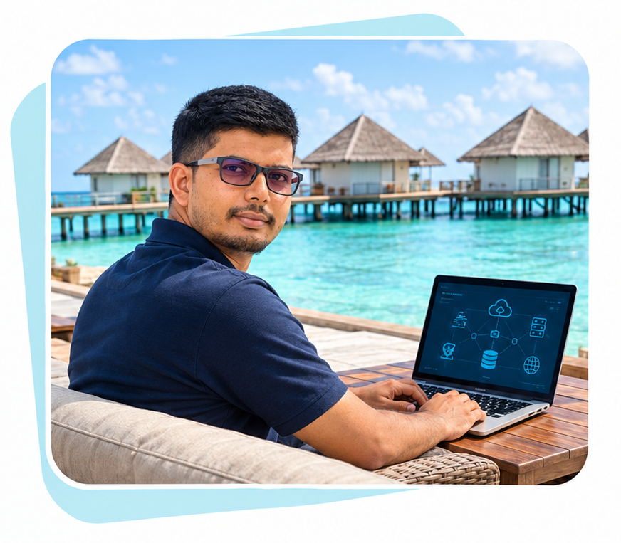
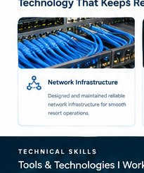
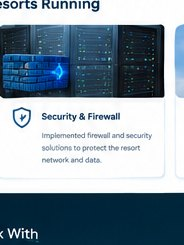
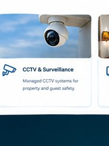

IT INFRASTRUCTURE & HOSPITALITY TECHNOLOGY PROFESSIONAL
Sri Lankan IT professional with more than 10 years of experience in Maldives hospitality & resort operations and more than 4 years of experience leading IT infrastructure projects across Sri Lanka, Qatar, Bahrain, and the Maldives.

About me
Sri Lankan IT professional with over 10 years of experience in hospitality-sector IT operations in the Maldives and more than 4 years of experience leading IT infrastructure projects across Sri Lanka, Qatar, Bahrain, and the Maldives.
CCNA-certified networking professional with expertise in network design, IPv4/IPv6, wireless networking, firewalls, cybersecurity, Microsoft technologies, Windows Server 2022 Datacenter, Hyper-V virtualization, CCTV, IPTV, IP telephony, and technical support.
Proven ability to lead teams and deliver secure, scalable, reliable, and business-focused IT solutions. Holds a Higher Diploma in Computer Science with Second Class Upper Honours from INFORTEC International Asia Campus.
Passionate about innovative technology, continuous improvement, and delivering high-quality IT services.
I bring a practical, operations-focused approach to maintaining reliable technology and supporting the people and services that depend on it.
PROFESSIONAL EXPERIENCE
Completed IT PROJECTS
Technology areas connected to modern resort operations and guest-facing services.

Maldives: Upgraded the ROBINSON Club core network with a new fiber backbone, Aruba switching, and GPON connectivity for 28 water villas.
Maldives: Implemented complete GPON, LAN, Wi-Fi, and fiber infrastructure for ROBINSON Club Noonu.
Sri Lanka: Delivered LAN, Wi-Fi, fiber backbone, and structured cabling projects for the Ministries of Environment and Sports and Trelleborg Group.
Bahrain: Installed, tested, and maintained MAN, LAN, WAN, wireless, and fiber networks, including splicing, OTDR testing, and structured cabling.

Managed firewalls, network access controls, security updates, monitoring, endpoint protection, and system availability.
Established backup, disaster recovery, and business continuity practices for critical resort operations.
Administered secure network and server environments, including routers, switches, firewalls, wireless systems, and endpoint devices.

Sri Lanka: Monitored and maintained the island-wide CCTV network of Sri Lanka Telecom PLC using Axis Camaras and Milestone technologies.
Sri Lanka: Maintained and troubleshot the CCTV network of Cargills Bank PLC using Cisco and ACTi technologies.
Bahrain: Implemented and supported CCTV infrastructure in Bahrain Diffence Force (BDF).
Maldives: Implemented and supported CCTV infrastructure as part of the complete Robinson Club Noonu resort technology project.
Maldives: Upgraded the ROBINSON Club standalone IPTV system to a fully featured Inforstar platform.
Maldives: Managed guest and staff Wi-Fi, IPTV, CCTV, property-management systems, and other business-critical resort applications.
Maldives: Supported Protel, Opera, Fusion, Matrix, Filosof, KOST, Visionline, and Microsoft 365 to enhance operational efficiency and guest service delivery.
Maldives: Migrated the Robinson Club Panasonic analogue telephone system to a modern 3CX v20 IP telephony solution.
Maldives: Implemented and supported AVAYA VoIP solution as part of the Robinson Club Noonu infrastructure project.
Sri Lanka: Implemented and maintained complete PABX, LAN, and Wi-Fi systems for the Ministry of Environment.
TECHNICAL SKILLS
EDUCATION & CERTIFICATIONS
Higher Diploma in Computer Science - Infortec International Asia Campus - Sri Lanka
Cisco Certified Network Associate – R&S - WinSyS Networks (Pvt) Ltd (CISCO Systems– US) Sri Lanka
Microsoft Certified Solution Associate (Training) - WinSyS Networks (Pvt) Ltd Sri Lanka.
BCS (PGD-UK) - Certificate Level(Part Qualified) - Infortec International Asia Campus - Sri Lanka
AI AND TECHNOLOGY PROJECTS
I am interested in AI and modern technology, exploring practical ways technology can create smarter and more efficient solutions for the hospitality industry.